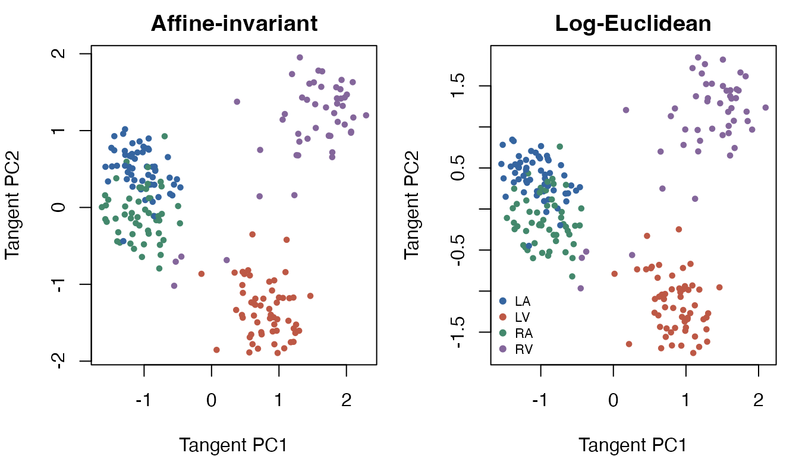
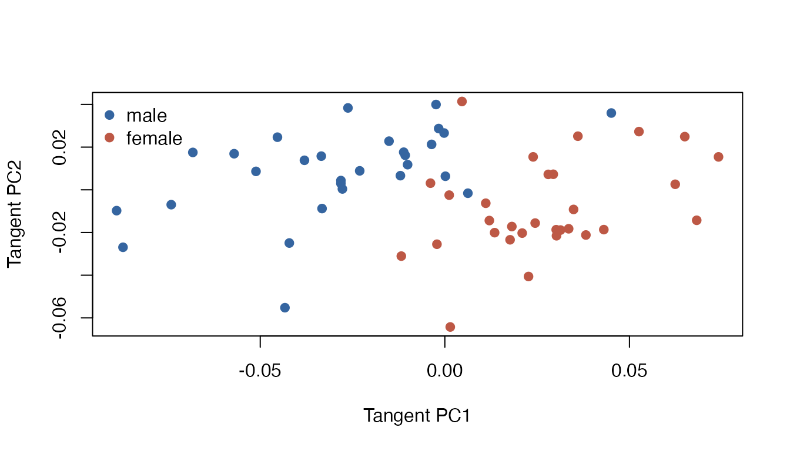
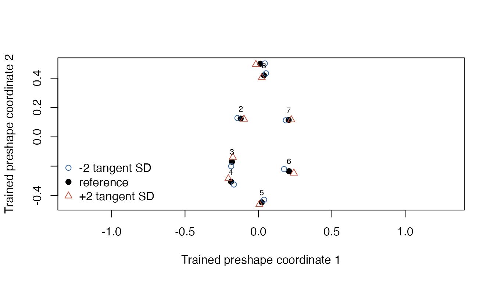

Descriptive covariance and landmark applications
Source:vignettes/data-workflows.Rmd
data-workflows.RmdThe package contains covariance matrices and landmark configurations
that can illustrate complete fitted workflows. These examples are
descriptive. Source provenance and the meaning of observations limit the
scientific claims they can support. The separate
write-JSS-Riemann/ writing workspace contains
replication/code.R, which separately regenerates full data
validation, model objects, figures, tables, and an output manifest.
Event-related covariance matrices
A reconstruction of the historical
pyRiemann 0.2.7 recipe matched all 216 ERP matrices,
with maximum relative Frobenius error 5.56e-12 and exact
label order, without rescaling, reordering, or sign changes. These are
test epochs from the single participant in the MNE sample audiovisual
experiment. The recipe selects 305 MEG sensors and fits supervised xDAWN
filters on 72 separate training epochs. Its 32 covariance coordinates
combine 16 class-prototype and 16 filtered trial features; they are not
original sensor channels. See ?ERP for filtering, epoch,
split, and covariance settings. The public MNE
sample record declares CC0. The reconstruction used recorded
contemporary dependencies, so the numerical match is not a claim of byte
identity or recovery of the original runtime. These descriptive examples
do not treat 216 epochs as independent participants, and a later split
of the stored matrices does not recreate the label-dependent
feature-learning step or establish new-participant performance.
data(ERP)
dim(ERP$covariance)
#> [1] 32 32 216
table(ERP$label)
#>
#> LA LV RA RV
#> 57 57 53 49
x <- wrap.spd(ERP$covariance)
spectral <- t(vapply(x$data, function(a) {
values <- eigen(a, symmetric = TRUE, only.values = TRUE)$values
c(minimum = min(values), maximum = max(values), ratio = min(values) / max(values))
}, numeric(3)))
stopifnot(all(spectral[, "minimum"] > 0))
apply(spectral, 2, range)
#> minimum maximum ratio
#> [1,] 3.173722e-29 1.708662e-26 8.848081e-05
#> [2,] 7.213355e-29 5.609244e-25 3.828991e-03No ridge, scaling, or guessed physical-unit conversion is applied. Very small absolute eigenvalues do not themselves imply poor conditioning; the dimensionless minimum/maximum ratio is recorded separately.
Fit two geometries to the same observations and retain their complete references. The mean diagnostics report numerical convergence.
airm <- riem.pga(x, ndim = 2, geometry = "affine_invariant", maxiter = 300, eps = 1e-7)
loge <- riem.pga(x, ndim = 2, geometry = "log_euclidean", maxiter = 300, eps = 1e-7)
stopifnot(airm$diagnostics$converged, loge$diagnostics$converged)
data.frame(
geometry = c("affine_invariant", "log_euclidean"),
mean_objective = c(airm$diagnostics$mean$objective, loge$diagnostics$mean$objective),
tangent_variance_retained = c(sum(airm$explained.variance), sum(loge$explained.variance))
)
#> geometry mean_objective tangent_variance_retained
#> 1 affine_invariant 25.61557 0.09125560
#> 2 log_euclidean 22.40366 0.08942419The two-dimensional displays retain only 9.1% and 8.9% of their respective tangent variances. They are partial views of a higher-dimensional sample; their appearance cannot establish classification performance or a neurophysiological difference. Objectives under different geometries are different estimands, so their numerical magnitudes alone do not rank the geometries.
colors <- c("#3565a0", "#bd5845", "#43886c", "#84669b")
old <- par(mfrow = c(1, 2), mar = c(4, 4, 2, 1))
plot(airm$embed, col = colors[as.integer(ERP$label)], pch = 19, cex = 0.6,
main = "Affine-invariant", xlab = "Tangent PC1", ylab = "Tangent PC2")
plot(loge$embed, col = colors[as.integer(ERP$label)], pch = 19, cex = 0.6,
main = "Log-Euclidean", xlab = "Tangent PC1", ylab = "Tangent PC2")
legend("bottomleft", levels(ERP$label), col = colors, pch = 19, bty = "n", cex = 0.7)
par(old)The same saved object can transform observations one at a time. This is a software reuse check, not an independent test set.
one_matrix <- wrap.spd(list(ERP$covariance[, , 1]))
stopifnot(max(abs(predict(loge, one_matrix) - loge$embed[1, , drop = FALSE])) < 1e-8)
reconstructed <- riem.reconstruct(loge, predict(loge, one_matrix))
stopifnot(min(eigen(reconstructed$data[[1]], symmetric = TRUE)$values) > 0)For a modest downstream task, fit descriptive clusters in the declared metric. The label/cluster table is a cross-tabulation on the same observations, not held-out prediction accuracy. No population-level uncertainty estimate is justified here.
set.seed(91401)
clusters <- riem.kmeans(x, k = 4, geometry = "log_euclidean", nstart = 2,
maxiter = 100, mean.eps = 1e-8)
stopifnot(clusters$converged, identical(predict(clusters, x), clusters$cluster))
clusters$starts
#> start valid converged termination objective iterations empty_clusters
#> 1 1 TRUE TRUE stable_assignment 4407.767 5 0
#> 2 2 TRUE TRUE stable_assignment 4423.755 4 0
#> error
#> 1
#> 2
table(event_label = ERP$label, descriptive_cluster = clusters$cluster)
#> descriptive_cluster
#> event_label 1 2 3 4
#> LA 12 0 45 0
#> LV 0 56 1 0
#> RA 2 0 51 0
#> RV 0 3 3 43Gorilla skull shape
The arrays contain 29 male and 30 female configurations with eight
corresponding landmarks in two dimensions. Their exact upstream mapping
was checked against shapes 1.2.8: reorder
gorm.dat and gorf.dat by
c(1, 5, 4, 3, 2, 8, 7, 6) on the landmark dimension,
retaining coordinate and individual order. The shapes
manual attributes these data to Paul O’Higgins and cites O’Higgins
and Dryden (1993), Journal of Human Evolution 24, 183–205. The
separate writing workspace includes the executable
maintenance/verify-gorilla-provenance.R
array-correspondence verification script.
The workflow analyzes shape after removing location and scale. Its quotient uses all orthogonal transformations, including reflections. This choice is explicit: orientation-preserving shape or original skull size would ask a different question.
data(gorilla)
as_list <- function(a) lapply(seq_len(dim(a)[3]), function(i) a[, , i])
raw <- c(as_list(gorilla$male), as_list(gorilla$female))
group <- factor(c(rep("male", 29), rep("female", 30)), levels = c("male", "female"))
shapes <- wrap.landmark(raw)
shape_fit <- riem.pga(shapes, ndim = 2, geometry = "shape_orthogonal",
maxiter = 300, eps = 1e-8)
stopifnot(shape_fit$diagnostics$converged)
summary(shape_fit)
#> Variance explained in the fitted tangent representation
#> PC1 PC2
#> variance 0.001433009 0.0005266715
#> proportion 0.460481632 0.1692401304
#> cumulative 0.460481632 0.6297217626The retained tangent variance is 63.0%. Sex labels describe this sample; the example does not perform a population test or estimate a causal or biological effect.
plot(shape_fit$embed, col = c("#3565a0", "#bd5845")[as.integer(group)], pch = 19,
xlab = "Tangent PC1", ylab = "Tangent PC2")
legend("topleft", levels(group), col = c("#3565a0", "#bd5845"), pch = 19, bty = "n")
Verify that the model uses its trained frame when new batches are wrapped. This check covers positive scaling, translation, rotation, reflection, and single-observation prediction.
angle <- 0.6
rotation <- matrix(c(cos(angle), sin(angle), -sin(angle), cos(angle)), 2)
transformed <- lapply(raw, function(a) sweep(2.3 * a %*% rotation, 2, c(30, -5), "+"))
reflected <- lapply(raw, function(a) a %*% diag(c(-1, 1)))
checks <- c(
location_scale_rotation = max(abs(predict(shape_fit, wrap.landmark(transformed)) - shape_fit$embed)),
reflection = max(abs(predict(shape_fit, wrap.landmark(reflected)) - shape_fit$embed)),
singleton = max(abs(do.call(rbind, lapply(raw, function(a) {
predict(shape_fit, wrap.landmark(list(a)))
})) - shape_fit$embed))
)
stopifnot(all(checks < 1e-7))
checks
#> location_scale_rotation reflection singleton
#> 2.380908e-16 0.000000e+00 1.804112e-16Reconstruct a small variation along the first component. Landmark numbers indicate stored correspondences; no anatomical names or outlines are inferred.
scores <- matrix(0, 3, 2)
scores[, 1] <- c(-2, 0, 2) * sqrt(shape_fit$variance[1])
mode <- riem.reconstruct(shape_fit, scores)$data
plot(mode[[2]], asp = 1, pch = 19,
xlim = range(vapply(mode, function(a) a[, 1], numeric(8))),
ylim = range(vapply(mode, function(a) a[, 2], numeric(8))),
xlab = "Trained preshape coordinate 1",
ylab = "Trained preshape coordinate 2")
points(mode[[1]], col = "#3565a0", pch = 1)
points(mode[[3]], col = "#bd5845", pch = 2)
text(mode[[2]], labels = seq_len(8), pos = 3, cex = 0.7)
legend("bottomleft", c("-2 tangent SD", "reference", "+2 tangent SD"),
col = c("#3565a0", "black", "#bd5845"), pch = c(1, 19, 2), bty = "n")
These reconstructions remain in the supported regular local shape neighborhood. Singular alignments and reconstructions outside that chart are explicit errors, not additional validated cases. Full numerical records and both component-mode plots are generated by the separate replication entry point.
sessionInfo()
#> R version 4.5.2 (2025-10-31)
#> Platform: aarch64-apple-darwin20
#> Running under: macOS Tahoe 26.6.2
#>
#> Matrix products: default
#> BLAS: /System/Library/Frameworks/Accelerate.framework/Versions/A/Frameworks/vecLib.framework/Versions/A/libBLAS.dylib
#> LAPACK: /Library/Frameworks/R.framework/Versions/4.5-arm64/Resources/lib/libRlapack.dylib; LAPACK version 3.12.1
#>
#> locale:
#> [1] C.UTF-8/C.UTF-8/C.UTF-8/C/C.UTF-8/C.UTF-8
#>
#> time zone: America/New_York
#> tzcode source: internal
#>
#> attached base packages:
#> [1] stats graphics grDevices utils datasets methods base
#>
#> other attached packages:
#> [1] Riemann_0.2.0
#>
#> loaded via a namespace (and not attached):
#> [1] tidyselect_1.2.1 hdrcde_3.5.0 dplyr_1.2.1
#> [4] farver_2.1.2 bitops_1.1-0 S7_0.2.2
#> [7] RCurl_1.98-1.20 fastmap_1.2.0 pracma_2.4.6
#> [10] maotai_0.3.0 RANN_2.6.3 digest_0.6.39
#> [13] lifecycle_1.0.5 cluster_2.1.8.3 rstiefel_1.0.1
#> [16] magrittr_2.0.5 dbscan_1.2.6 compiler_4.5.2
#> [19] rlang_1.3.0 sass_0.4.10 tools_4.5.2
#> [22] mclustcomp_0.3.5 yaml_2.3.12 knitr_1.51
#> [25] htmlwidgets_1.6.4 scatterplot3d_0.3-45 mclust_6.1.3
#> [28] RColorBrewer_1.1-3 rainbow_3.8 KernSmooth_2.23-27
#> [31] fda_6.3.0 Rtsne_0.17 desc_1.4.3
#> [34] pcaPP_2.0-5 grid_4.5.2 clarabel_0.11.3
#> [37] colorspace_2.1-3 ADMM_0.3.4 T4cluster_0.1.4
#> [40] fastcluster_1.3.0 ggplot2_4.0.3 scales_1.4.0
#> [43] iterators_1.0.14 MASS_7.3-66 mvtnorm_1.4-2
#> [46] cli_3.6.6 rmarkdown_2.31 ragg_1.5.2
#> [49] generics_0.1.4 otel_0.2.0 RSpectra_0.16-2
#> [52] RcppDE_0.1.9 CVXR_1.9.2 scs_3.2.7
#> [55] fds_1.9 cachem_1.1.0 splines_4.5.2
#> [58] parallel_4.5.2 vctrs_0.7.3 T4transport_0.1.9
#> [61] Matrix_1.7-6 jsonlite_2.0.0 systemfonts_1.3.2
#> [64] foreach_1.5.2 gsignal_0.3-7 jquerylib_0.1.4
#> [67] glue_1.8.1 pkgdown_2.2.1 codetools_0.2-20
#> [70] DEoptim_2.2-8 gtable_0.3.6 osqp_1.0.0
#> [73] gmp_0.7-5.1 tibble_3.3.1 pillar_1.11.1
#> [76] htmltools_0.5.9 deSolve_1.42 R6_2.6.1
#> [79] textshaping_1.0.5 Rdpack_2.6.6 ks_1.15.3
#> [82] doParallel_1.0.17 lpSolve_5.6.23 evaluate_1.0.5
#> [85] lattice_0.23-1 rbibutils_2.4.1 backports_1.5.1
#> [88] highs_1.14.0-2 bslib_0.12.0 Rcpp_1.1.2
#> [91] checkmate_2.3.4 xfun_0.60 fs_2.1.0
#> [94] Rdimtools_1.1.5 pkgconfig_2.0.3